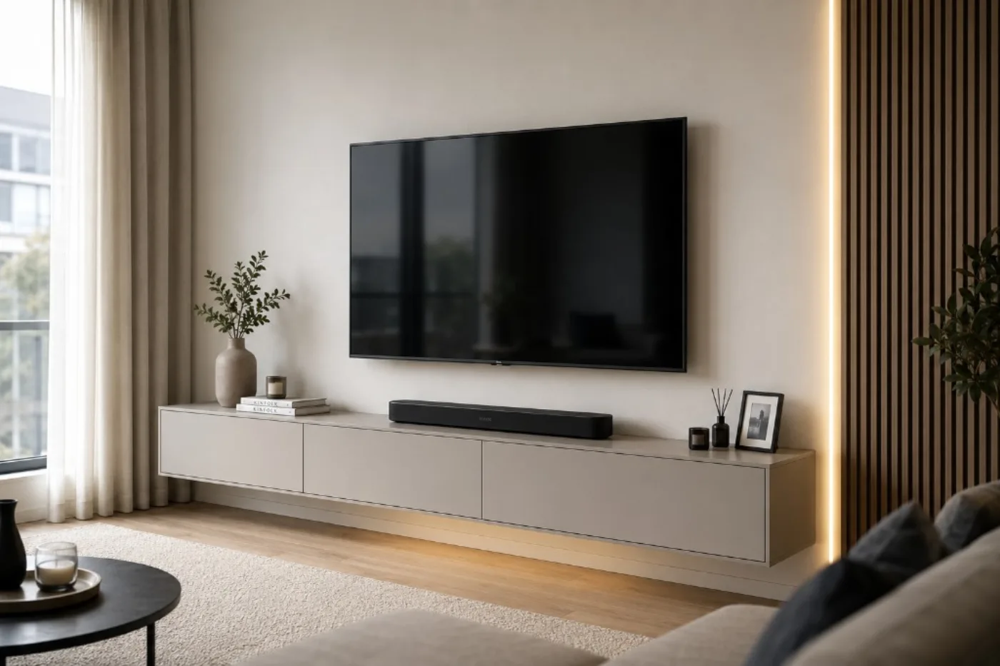
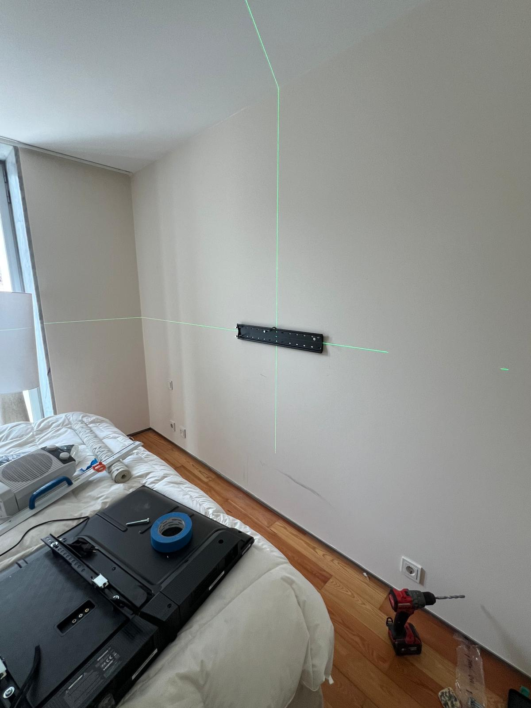
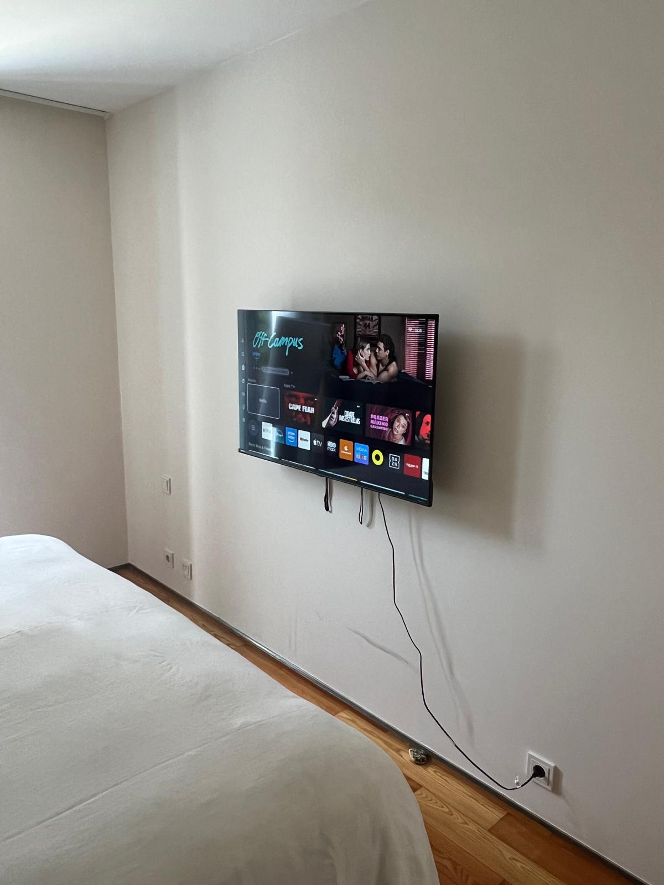
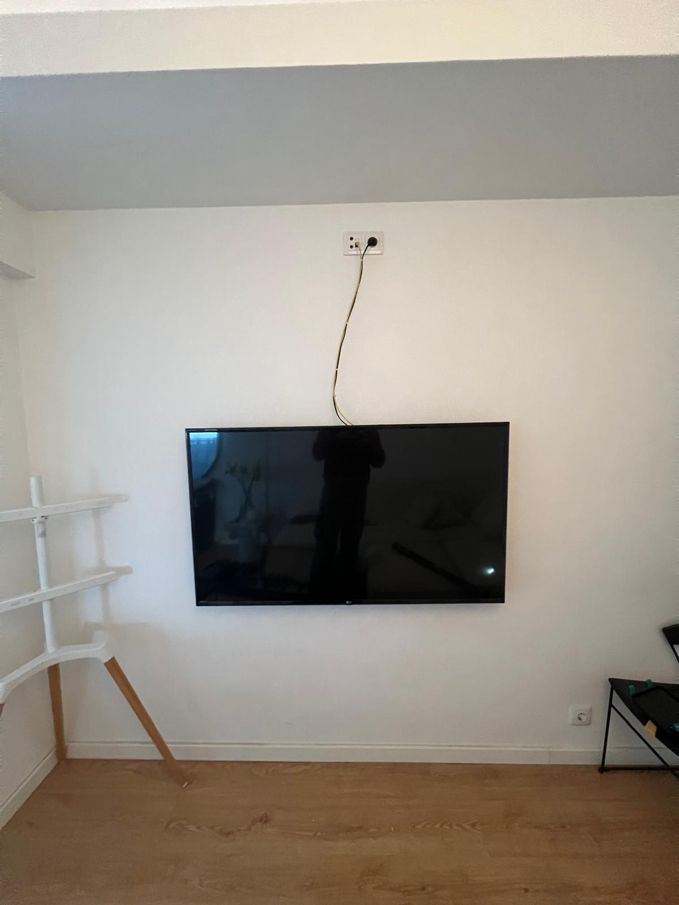
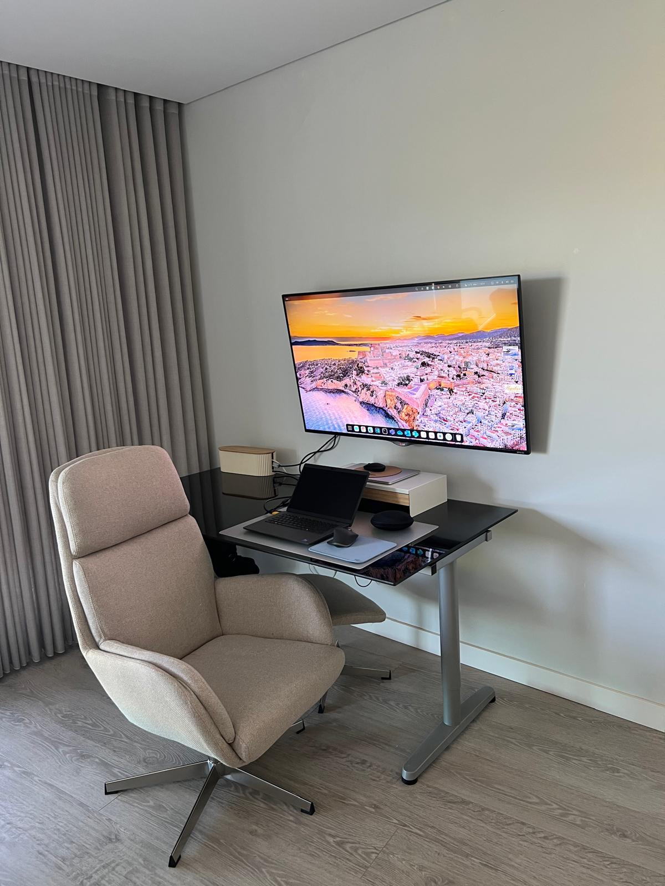
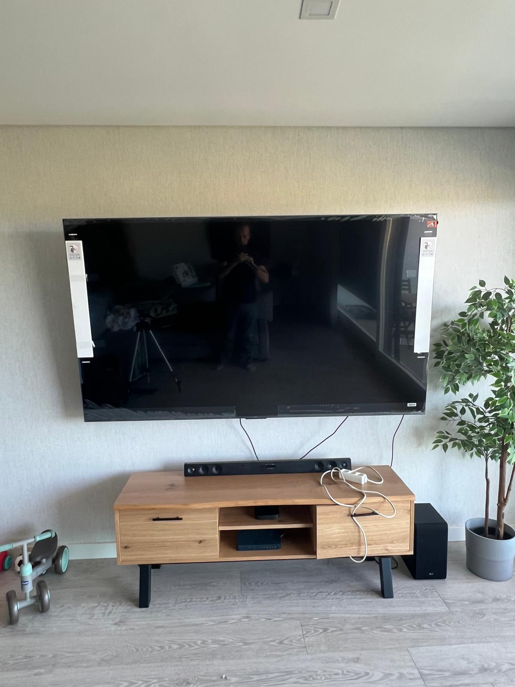
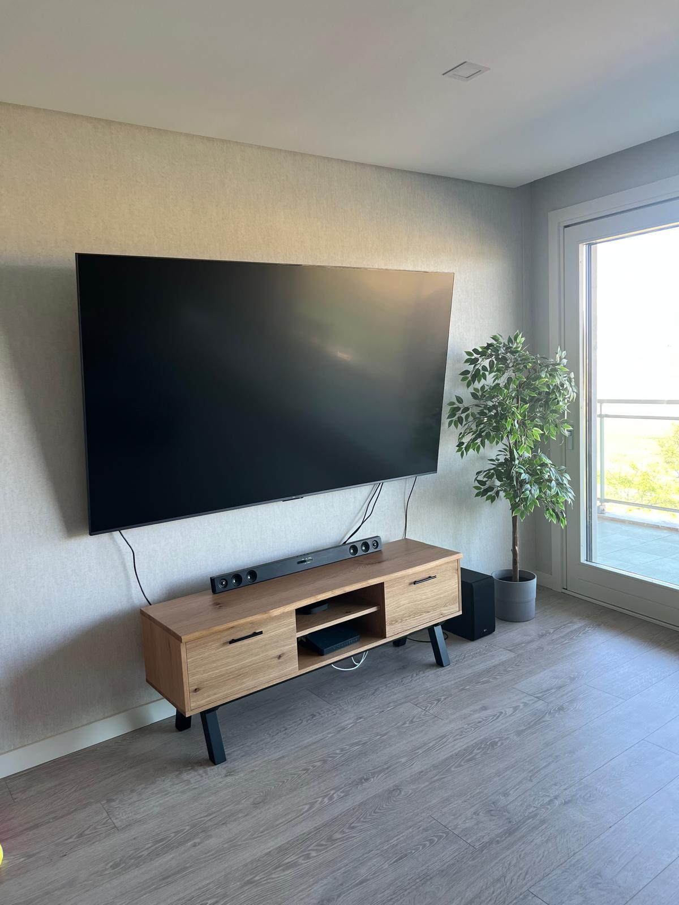

Instalação de TV na Parede
Instalação de televisões com suporte fixo, inclinável ou articulado, garantindo nivelamento, segurança e acabamento profissional.
Ver instalação de TV na paredeInstalamos a sua TV na parede com alinhamento perfeito, fixação segura e acabamento limpo. Trabalhamos com suportes fixos, inclináveis e articulados em paredes de betão, tijolo e pladur.

Instalação de televisões com suporte fixo, inclinável ou articulado, garantindo nivelamento, segurança e acabamento profissional.
Ver instalação de TV na paredeInstalação de suportes articulados para maior conforto, ajuste de ângulo e melhor visualização da TV.
Ver suportes articulados para TVSoluções para esconder, alinhar ou organizar cabos, deixando a zona da televisão mais limpa e elegante.
Ver organização de cabos da TVEscolha da fixação adequada para cada tipo de parede, reduzindo riscos e garantindo uma instalação segura.
Ver instalação por tipo de paredePrestamos serviço de instalação e montagem de TV na parede em Lisboa, Odivelas, Loures, Amadora, Sintra, Cascais, Almada, Seixal, Barreiro, Montijo, Brejos de Azeitão, Azeitão, Setúbal e zonas próximas. Para outras localidades, contacte-nos por WhatsApp.
Instalação de TV na parede em Lisboa e zonas próximas.
Serviço em Odivelas, Pontinha, Famões, Ramada e Caneças.
Instalação de TV em Almada e noutras zonas da Margem Sul.
Instalação cuidada para apartamentos e moradias em Cascais e Estoril.
A instalação é feita com atenção à segurança, alinhamento e acabamento final, para deixar a sua TV bem fixa e o espaço mais organizado.
Envie mensagem pelo WhatsApp com fotos da parede e tamanho da TV.
Marcamos o melhor dia e horário para a instalação.
Fazemos a montagem com segurança, nível e cuidado profissional.

Fixações resistentes e técnicas de instalação profissionais.
Alinhamento perfeito e cabos ocultos para um visual clean.
Marcação, nivelamento e verificação final em cada instalação.
Cumprimos horários e respeitamos o seu tempo.
Orçamento, esclarecimentos e agendamento tratados diretamente por WhatsApp.

A WallFixTV.pt presta serviços de instalação de televisões na parede, com atendimento direto desde o pedido de orçamento até à verificação final da instalação.
O contacto, a análise do pedido e o agendamento são feitos de forma direta, tendo em conta o tamanho e peso da televisão, o tipo de suporte, a parede e a solução pretendida para os cabos.
Cada instalação inclui marcação, nivelamento, fixação adequada e uma verificação final da estabilidade do suporte e da posição da televisão.
Consulte as opiniões publicadas no perfil da WallFixTV.pt no Google e conheça a experiência partilhada por quem recorreu aos nossos serviços.
Alguns exemplos de instalações e preparações realizadas, desde o nivelamento até ao acabamento final.
Instalação da televisão concluída com verificação final através de nível digital e nível de bolha, confirmando o alinhamento antes da entrega do serviço.
O nivelamento é verificado no final da instalação através de ferramentas de medição adequadas.





Fotografias de trabalhos reais realizados pela WallFixTV.pt.
Guias simples para ajudar a escolher o suporte, o tamanho da TV, a altura ideal e a melhor solução para cada parede.
Tipos de suporte, tipos de parede, tempo de instalação, cuidados de segurança e o que está incluído.
PreçosConheça os fatores que influenciam o orçamento, desde o tamanho da TV e tipo de suporte até à parede e organização dos cabos.
SuportesQuando escolher suporte articulado, vantagens, limitações, compatibilidade VESA e segurança.
AcabamentoCalhas, passagem de cabos, soluções para pladur, tijolo e betão, e cuidados de segurança elétrica.
Tipo de paredeComo escolher a fixação certa para cada parede e evitar riscos numa instalação insegura.
Escolha da TVVeja qual o tamanho ideal da TV conforme a distância ao sofá, cama ou zona de visualização.
ConfortoRegras de postura, distância e altura para evitar desconforto no pescoço e nas costas.
Sim, mas é necessário avaliar a estrutura da parede e usar fixações adequadas. Nem todas as paredes de pladur suportam o mesmo peso, por isso a instalação deve ser feita com cuidado.
Podemos instalar o suporte fornecido pelo cliente ou aconselhar o tipo de suporte mais adequado para a televisão e para a parede.
Sim, podemos organizar ou ocultar cabos conforme o tipo de parede e a solução pretendida.
Na maioria dos casos, a instalação demora entre 1 e 2 horas, dependendo do tipo de parede, tamanho da TV e suporte utilizado.
Sim, fazemos montagem de TVs de vários tamanhos. Para televisões grandes, avaliamos o peso, o suporte e o tipo de parede antes da instalação.